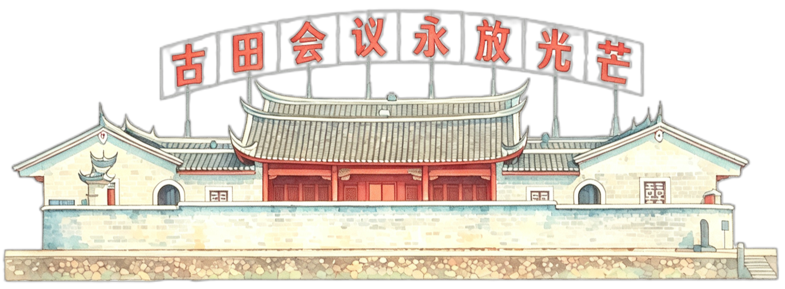

长汀
客家首府 · 千年古城
长汀是客家民系形成和发展的重要区域，汀江穿城而过，被誉为“客家母亲河”，当地居民以客家人为主，保留了丰富的客家文化传统。
 长汀
长汀
上杭
客家祖地 · 红色故土
上杭是客家先民迁徙的重要驿站和聚居地，上杭瓦子街被视为客家民系成长的摇篮，全县大部分人口为客家人，客家文化氛围浓厚。

上杭武平
客家百姓镇 · 闽西绿洲
当地聚居着上百个客家姓氏，聚族而居特征明显，语言和习俗具有典型的客家特色。
 武平
武平
永定
土楼之乡 · 侨客同源
永定是客家土楼的发源地和核心分布区，拥有23000多座土楼，其中圆楼360多座，永定客家人不仅保留了传统的客家生活方式，还通过土楼建筑展现了独特的客家文化。
连城
中国温泉之城 · 客家美食之乡
客家文化丰富，以“游大龙”等民俗活动闻名，当地居民多为客家人，保留了客家语言、习俗和传统手工艺。
 连城
连城
点击县区，开启美食盲盒